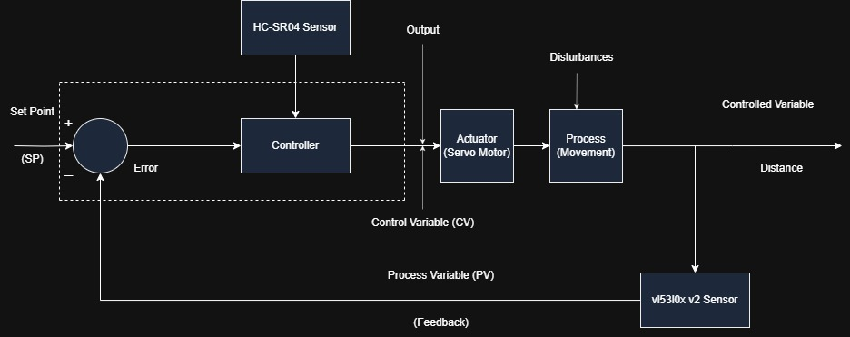
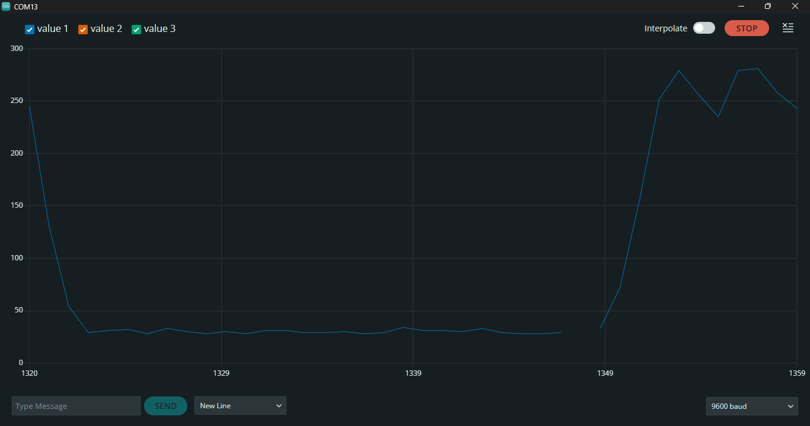
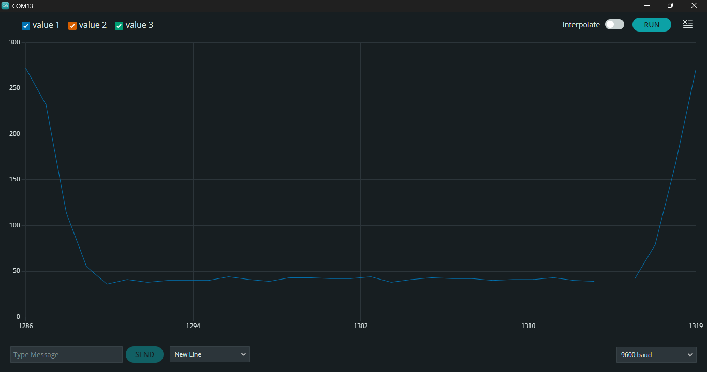
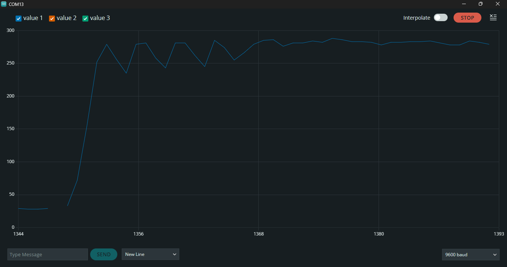
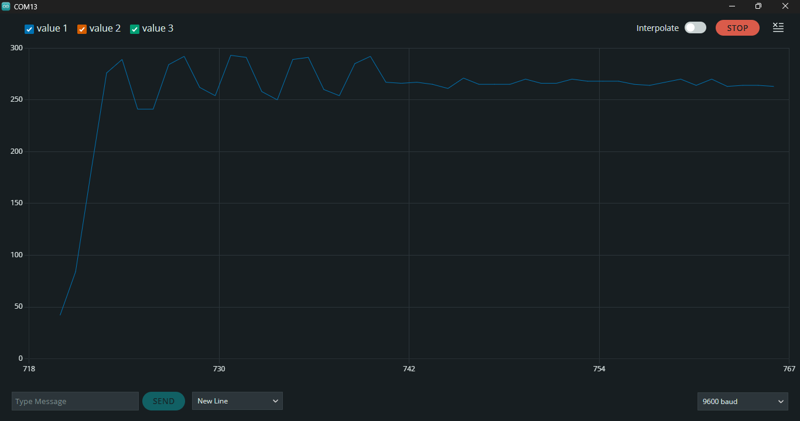
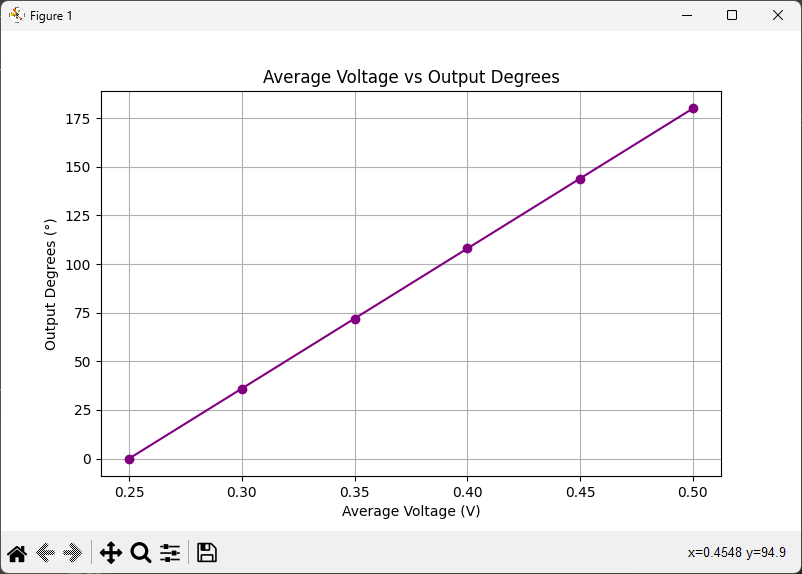
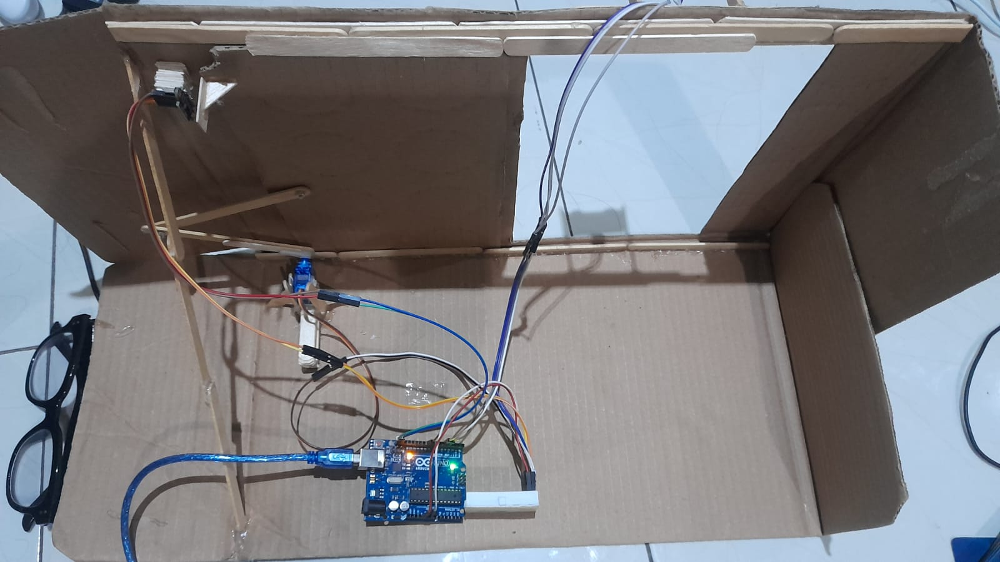

Automatic Sliding Door PID System Control
Tuned closed-loop PID control system on Arduino Uno using a VL53L0X Time-of-Flight laser sensor for smooth, oscillation-free automatic sliding door mechanics.
Hardware & Tech Stack
Skills & Competencies
The Problem
Standard sliding doors utilize simple, open-loop threshold triggers that operate the motor at a constant binary velocity (full-on or full-off). This causes abrupt mechanical starting and stopping, leading to excessive wear on the gear mechanisms, loud noise, mechanical vibrations, and potential safety hazards for users when the door slams shut.
The PID Solution
A closed-loop Proportional-Integral-Derivative (PID) controller is implemented on an Arduino Uno. By measuring the door's current position using a high-precision VL53L0X Time-of-Flight laser sensor, the controller adjusts the servo angle in real time to minimize position error. This ensures a smooth, decelerating profile as the door approaches its setpoints (52mm for open, 269mm for closed), achieving optimal damping and zero mechanical slamming.
Closed-Loop System Architecture
The system operates as a closed-loop negative feedback control loop. An ultrasonic sensor (HC-SR04) acts as an external trigger to detect arriving people. Once triggered, the target setpoint steps from 269 mm (Closed) to 52 mm (Opened). The feedback loop continuously regulates the door position to match this setpoint.
Feedback Loop Components
- Input (Setpoint): Target door position (52 mm open / 269 mm closed).
- Controller (Arduino): Calculates PID algorithm output to compute the required correction.
- Actuator (SG90 Servo): Converts the electrical control signal (servo angle command) into mechanical force.
- Plant (Sliding Door): The physical door moving along its sliding frame.
- Sensor Feedback (VL53L0X V2): Real-time laser ranging sensor measuring the door's actual position in millimeters.

Mathematical Modeling & Transfer Function
Controller Algorithm (PID)
The PID controller calculates the control output \(u(t)\) in real-time by analyzing the error signal \(e(t)\) between the setpoint and the door's current position:
Where \(e(t) = \text{Setpoint} - \text{CurrentPosition}\). The system discretizes this control loop on the Arduino Uno with a sampling rate of \(\Delta t = 50\text{ ms}\).
Mechanical Transfer Function
The sliding door is driven by a rotary servo motor through a physical linkage mechanism. To calibrate the plant, the ratio of linear door position (\(\text{mm}\)) to angular servo input (\(\text{degrees}\)) was experimentally measured:
Live Interactive PID Closed-Loop Simulator
Test the closed-loop system dynamics in real time. Adjust the controller gains (\(K_p, K_i, K_d\)) or choose one of the predefined presets to see how it affects the door's movement and transient responses. You can click Open Door or Close Door to trigger setpoint transitions!
Experimental Results & Transient Analysis
The system performance was analyzed under two configuration states: before tuning (using standard Ziegler-Nichols estimates) and after manual fine-tuning. Time-domain transient parameters were measured from high-speed slow-motion camera footage.
| Target Position | Kp | Ki | Kd | Delay Time (\(T_d\)) | Rise Time (\(T_r\)) | Peak Time (\(T_p\)) | Settling Time (\(T_s\)) |
|---|---|---|---|---|---|---|---|
| 52 mm (Open) [Untuned] | 1.2 | 0.020 | 0.8 | 140 ms | 300 ms | 340 ms | 4240 ms |
| 52 mm (Open) [Tuned] | 0.8 | 0.015 | 0.6 | 160 ms | 290 ms | 710 ms | 1040 ms |
| 269 mm (Close) [Untuned] | 1.2 | 0.020 | 0.8 | 180 ms | 380 ms | 430 ms | 1960 ms |
| 269 mm (Close) [Tuned] | 0.8 | 0.015 | 0.6 | 130 ms | 400 ms | 430 ms | 1030 ms |
Opening Dynamics (52 mm Setpoint)


Analysis: The untuned system suffered from prolonged structural limit-cycles and high settling times due to sensor noise feeding back into excessive proportional/integral gains. Lowering \(K_p\) to 0.8 and \(K_d\) to 0.6 successfully damped out the oscillations.
Closing Dynamics (269 mm Setpoint)


Analysis: For closing, the tuned parameters cut down the settling time by 47.4% (from 1960ms down to 1030ms). The steady-state error dropped to near-zero, proving that the manual tuning achieved highly efficient damping.
Servo Motor Characterization
To ensure precise linear movement mapping, the SG90 micro-servo was characterized at different PWM duty cycles. The output average voltage and measured rotation angles show a highly linear response curve, validating our constant Transfer Function model.
| Duty Cycle (%) | Measured Voltage (Avg) | Output Rotation (Deg) | Response Time (ms) |
|---|---|---|---|
| 5% | 0.25 V | 0° | 20 ms |
| 6% | 0.30 V | 36° | 20 ms |
| 8% | 0.40 V | 108° | 20 ms |
| 10% | 0.50 V | 180° | 20 ms |

Arduino C++ Source Code
Below is the core control loop implementation deployed on the Arduino Uno microcontroller, separated into logical modules with detailed technical explanations.
1. Libraries, Pin Definitions & PID Constants
This section includes the required headers for I2C communication (Wire.h), servo motor control (Servo.h), and the Adafruit VL53L0X laser ranging library. Pins are assigned for the ultrasonic sensor trigger/echo and servo PWM lines. The optimal tuned control constants (\(K_p = 0.8\), \(K_i = 0.015\), \(K_d = 0.6\)) are declared globally.
#include <Wire.h>
#include <Servo.h>
#include <Adafruit_VL53L0X.h>
#define TRIG_PIN 4
#define ECHO_PIN 5
#define SERVO_PIN 9
Servo slidingDoorServo;
Adafruit_VL53L0X lox = Adafruit_VL53L0X();
bool isOpen = 0;
VL53L0X_RangingMeasurementData_t measure;
// Tuned optimal PID Constants
float kp = 0.8;
float ki = 0.015;
float kd = 0.6;2. System Initialization (setup)
The setup() routine initializes the 9600 baud serial port for tracking logs, defines digital I/O modes for the HC-SR04 pins, initializes the VL53L0X sensor over the I2C bus, and attaches the servo motor. The door is commanded to the default closed state (rotary servo angle mapped to 142°).
void setup() {
Serial.begin(9600);
pinMode(TRIG_PIN, OUTPUT);
pinMode(ECHO_PIN, INPUT);
if (!lox.begin()) {
Serial.println("Failed to initialize VL53L0X!");
while (1);
}
slidingDoorServo.attach(SERVO_PIN);
slidingDoorServo.write(142); // Default closed position (angle mapped)
}3. Laser Ranging Feedback (doorPos)
This function performs a real-time distance measurement using the Time-of-Flight (ToF) laser sensor. It queries the sensor, checks if the ranging status flag is valid (filtering out-of-range sensor dropouts), and returns the raw distance in millimeters.
int doorPos() {
lox.rangingTest(&measure, false);
if (measure.RangeStatus != 4) {
return measure.RangeMilliMeter;
} else return -1;
}4. Closed-Loop PID Control Loop
The core PIDControl() routine implements the discrete-time PID algorithm. It runs inside a while loop that active-monitors the distance error until the door settles inside a ±3 mm deadband around the target setpoint. It computes error, accumulates integral error, takes derivative error changes, and adds the feedforward setpoint term to offset steady-state gravity/friction. The resulting output in millimeters is scaled and constrained to fit the servo's physical range (23° to 160°).
void PIDControl(int setpoint, float* previousError, float* integral) {
int currentPosition = doorPos();
while(setpoint < currentPosition - 3 || setpoint > currentPosition + 3) {
if (currentPosition == -1) return;
float error = setpoint - currentPosition;
*integral += error;
float derivative = error - (*previousError);
// Compute output position in mm
float output = (kp * error + (ki * (*integral)) + (kd * derivative)) + setpoint;
*previousError = error;
// Map mm output back to rotary servo degrees and constrain
int servoInput = constrain(output * 142 / 274, 23, 160);
slidingDoorServo.write(servoInput);
currentPosition = doorPos();
delay(50); // Control loop interval
}
}5. Opening & Closing Handlers
These wrapper functions trigger the control routine with target setpoints: 52 mm for opening and 269 mm for closing. They initialize the local error tracking variables to zero, ensuring each step response begins with clean initial conditions.
void PIDopen() {
float prevErr = 0, integ = 0;
PIDControl(52, &prevErr, &integ);
delay(250);
}
void PIDclose() {
float prevErr = 0, integ = 0;
PIDControl(269, &prevErr, &integ);
delay(250);
}6. Sonar Distance Reading (getDistance)
This helper reads the HC-SR04 ultrasonic sensor. It sends a short high pulse (10 microseconds) to trigger the sonar transmitter, reads the duration of the return echo via pulseIn(), and converts the time delay into distance in millimeters based on the speed of sound.
int getDistance() {
digitalWrite(TRIG_PIN, LOW);
delayMicroseconds(2);
digitalWrite(TRIG_PIN, HIGH);
delayMicroseconds(10);
digitalWrite(TRIG_PIN, LOW);
int duration = pulseIn(ECHO_PIN, HIGH);
int distance = duration * 0.344 / 2;
return distance;
}7. Main Program Loop (loop)
The primary executive loop runs every 100ms. It checks the ultrasonic sensor's distance reading. If a person is detected within the 115 mm proximity range, it initiates the PIDopen() transition. Otherwise, if the door is open and no one is in proximity, it initiates PIDclose().
void loop() {
if(getDistance() < 115) { // Ultrasonic threshold trigger
if(!isOpen) PIDopen(), isOpen = 1;
} else {
if(isOpen) PIDclose(), isOpen = 0;
}
delay(100);
}Video Demonstration & Hardware Setup
Live Demonstration Video
Physical Construction
The experimental prototype was constructed using an acrylic sliding door panel sliding on guide rails, directly driven by a micro SG90 servo motor linked to an mechanical arm.
Technical evaluation: The hardware responded cleanly under optimal PID constants. However, minor sensor communication dropouts can occur if the I2C SCL/SDA jumper cables are not firmly secured to the Arduino board, which can lead to a brief system freeze. Ensuring soldered or locked terminal connections is recommended for industrial applications.

Explore the Codebase
Access the complete C++ firmware program, VL53L0X Time-of-Flight sensor integrations, SG90 servo motor control loops, and HC-SR04 ultrasonic threshold controllers on GitHub.